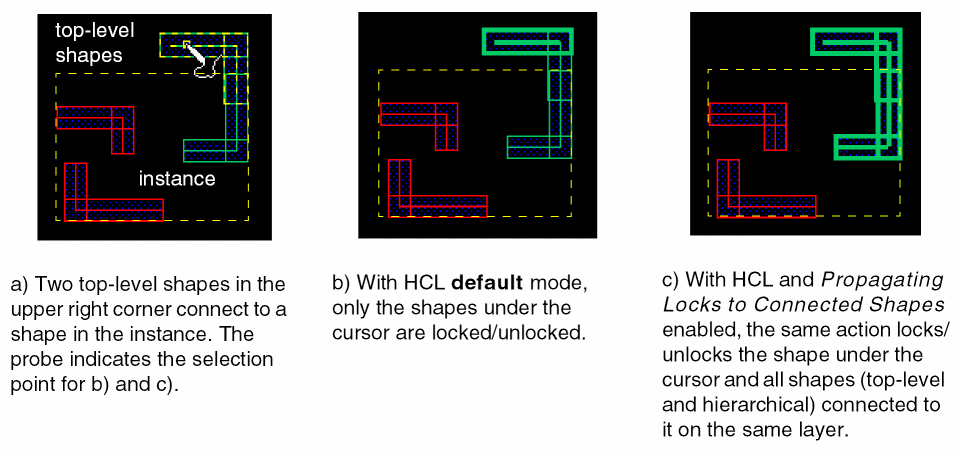

Color Locking on Connected Shapes
By default, color attribute locking and HCL operate only on selected shapes. There are two ways to propagate locks to connected shapes:
- Use Propagate Locks in the Multiple Patterning toolbar, as described in Propagating Locks.
-
Set the appropriate options in the Multiple Patterning Options form to automatically propagate locks when the color engine is on:
-
The following options influence locking that is initiated from the Multiple Patterning toolbar (Lock Current, Lock Color, Lock All):
- Propagate Locks to Connected Shapes extends the color locking to unlocked shapes that are connected to the selected shapes on the same layer.
-
Propagate Locks to Connected Shapes with Override Lock on Connected Shapes extends the color locking to the locked and unlocked shapes that are connected to the selected shapes on the same layer.
- The Propagate Locks option influences locking while editing (for example, when adding, moving, or stretching a shape, or assigning a locked color using the Property Editor):
The difference between hierarchical color locking with Propagating Locks to Connected Shapes disabled (default) versus enabled is illustrated in the figure below.
 -
The following options influence locking that is initiated from the Multiple Patterning toolbar (Lock Current, Lock Color, Lock All):
Return to top